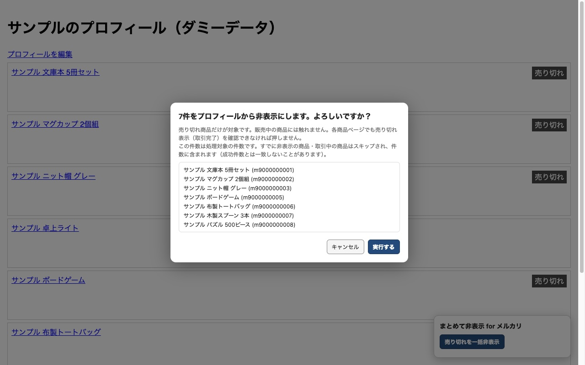

まとめて非表示 for メルカリ
メルカリの非公式ツールです。株式会社メルカリとは無関係で、提携・承認はありません。
売り切れ商品を、まとめてプロフィールから非表示に。
自分のプロフィールに並ぶ売り切れ商品を集め、確認のうえで、メルカリの商品ページにある「プロフィールから非表示」ボタンを1件ずつ代わりに押します。

集めて、確認して、1件ずつ。
- 自分のプロフィールで「売り切れを一括非表示」を押すと、一覧を自動でスクロールして売り切れ商品を集めます。
- 実行前に、件数と対象の商品名・商品IDを確認ダイアログで表示します。キャンセルすれば何も変更しません。
- 商品ページを1件ずつ開き、間隔（既定2〜3秒、最小2秒）をあけて処理します。進捗を表示し、「停止」でいつでも中断できます。
- 終了後に、成功・スキップ・失敗の件数と、失敗した商品のURL・理由を表示します。
- 商品ページでは、その1件だけを処理する「このページで実行」と、何も押さずに状態を表示する「診断」を使えます。
押す前に、確かめます。
- 自分のプロフィールであることを確認できない場合、一括処理は開始しません。
- 各商品ページでも売り切れ（取引完了）を確認できない商品は押しません。取引中の商品と、すでに非表示の商品はスキップします。
- ログイン画面・認証画面・アクセス集中の表示を検知した場合や、3件連続で失敗した場合は全体を中止します。
ご利用の前に
メルカリ上のデータが実際に変わります。非表示にした商品は、他のユーザーからも見えなくなります。元に戻すには、各商品ページで「プロフィールに表示」を押してください。一括で戻す機能はありません。
メルカリの公式製品ではありません。メルカリの画面仕様が変わると動かなくなる場合があります。少数件から試してください。
拡張は外部のサーバーと通信しません。設定と処理状況はこのブラウザの中だけに保存します。詳しくはプライバシーポリシーをご確認ください。
サポートとプライバシー
運営者：横田裕市